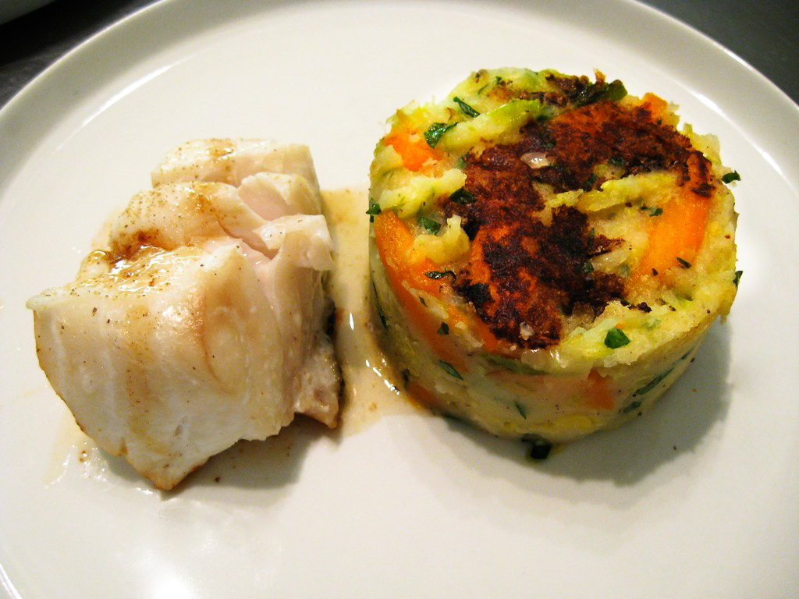
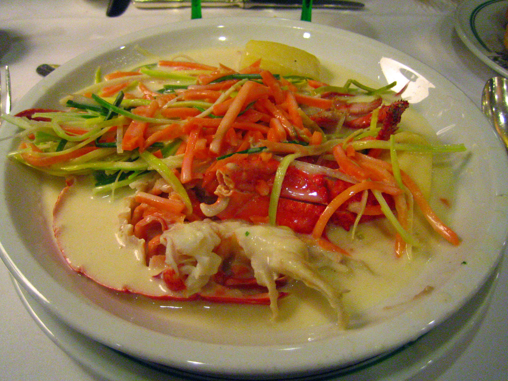

Bourgondische Verwennerij!!
Boulets à la Liégeoise (Belgian Meatballs in Sauce)

Mix ground meat, onion, egg, breadcrumbs, thyme, salt, and pepper. Form into balls and refrigerate for 30 minutes. In a skillet, brown the meatballs on all sides. Remove and set aside. In the same skillet, sauté onions in butter until caramelized. Add apple syrup, beef stock, mustard, salt, and pepper. Simmer for 10 minutes. Add the meatballs back to the skillet and simmer for 20 minutes, allowing the flavors to meld. Serve hot with fries or mashed potatoes.
Ingredients:
For the Meatballs:
For the Sauce:
Recipe:
Belgian Fries (Frites)

Peel the potatoes and cut them into even strips (about 1/4 inch thick). Rinse in cold water to remove excess starch. Heat oil in a deep fryer or heavy-bottomed pot to 150°C (300°F). Fry the potato strips in batches for 5-7 minutes until soft but not browned. Drain on paper towels. Increase the oil temperature to 190°C (375°F). Fry the potatoes again in batches until golden and crispy, about 2-3 minutes. Drain and sprinkle with salt. Serve hot with mayonnaise, ketchup, or your favorite dipping sauce.
Ingredients:
Main Ingredients:
Recipe:
Shrimp Croquettes (Croquettes aux Crevettes)

In a pan, melt butter and stir in the flour to form a roux. Gradually add milk, stirring constantly, until smooth and thickened. Add chopped shrimp, nutmeg, salt, and pepper. Cool the mixture and shape into small logs. Dip each croquette into beaten eggs, then roll in breadcrumbs to coat evenly. Heat oil in a fryer or pan to 180°C (350°F). Fry croquettes until golden brown and crispy, about 2-3 minutes. Drain on paper towels. Serve warm with lemon wedges or tartar sauce.
Ingredients:
For the Croquettes:
Recipe:
Stoemp (Mashed Potatoes with Vegetables)

In a pot, boil potatoes, carrots, and leek together in salted water until tender, about 15-20 minutes. Drain the vegetables and mash them together in the pot. Add butter and cream, stirring to combine. Add salt and pepper to taste. Serve warm as a side dish with sausages or meat.
Ingredients:
Main Ingredients:
Recipe:
Waterzooi (Belgian Stew)

In a large pot, melt butter and lightly sauté chicken pieces or fish fillets. Remove and set aside. In the same pot, add carrots, leeks, onion, and potatoes. Sauté for 5 minutes, then add the stock. Simmer until the vegetables are tender. Return the chicken or fish to the pot. Stir in cream, season with salt and pepper, and simmer for 10 more minutes. Serve hot with crusty bread or over rice.
Ingredients:
Main Ingredients:
Recipe: